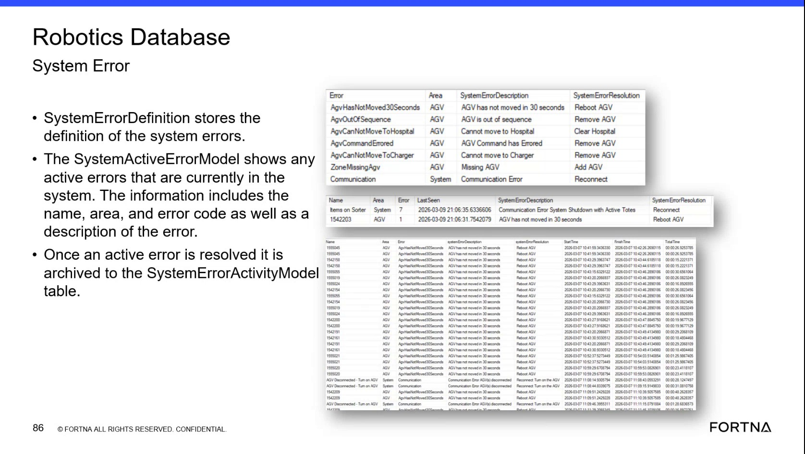

| Procedure ID | proc_look_up_system_error_definitions_in_the_robotics_database_v1 |
|---|---|
| Title | Look Up System Error Definitions in the Robotics Database |
| Procedure Type | diagnostic |
| Primary Role | L2_support |
| Support Safe | Yes |
| Capability Tags | agv_active_errors |
| Access Surface | wcs_sql |
| Audience Roles | L2_support, L3_support |
| Failure Pattern Tags | None |
| Validation Status | needs_sme_review |
| Merge Status | source_finalized |
Use read-only SSMS against the WCS / Helix Robotics Database to match a reported system error to its Error, Area, SystemErrorDescription, and SystemErrorResolution values.
Use this read-only SSMS diagnostic when a named system error must be interpreted using the Robotics Database SystemErrorDefinition table. Use the returned Area, SystemErrorDescription, and SystemErrorResolution values to support troubleshooting and escalation.

Responsible role: L2_support
Instruction:
In the WCS / Helix DB (SSMS) surface, open SSMS and select the Robotics Database.
Expected result:
The Robotics Database is selected in SSMS and the SystemErrorDefinition table is available for inspection.
Stop or Escalate If:
Responsible role: L2_support
Instruction:
In SSMS, open the SystemErrorDefinition table and inspect the displayed Error, Area, SystemErrorDescription, and SystemErrorResolution columns.
Expected result:
The SystemErrorDefinition table displays the reported error entry or confirms that no matching entry is present.
Stop or Escalate If:
Responsible role: L2_support
Instruction:
In the SSMS SystemErrorDefinition row, inspect and preserve the Error, Area, SystemErrorDescription, and SystemErrorResolution values. Examples shown in the table include AgvHasNotMoved30Seconds / AGV / AGV has not moved in 30 seconds / Reboot AGV and AgvOutOfSequence / AGV / AGV is out of sequence / Remove AGV.
Expected result:
The matching row provides a non-empty Error name with corresponding Area, SystemErrorDescription, and SystemErrorResolution values.
Stop or Escalate If:
Responsible role: L2_support
Instruction:
If the reported Error is not present or any required definition field is empty or inconsistent in SSMS, stop the lookup and preserve the observed error name together with the missing or inconsistent field information for escalation.
Expected result:
The escalation record identifies the observed error name and states whether the row was absent or which definition field was missing or inconsistent.
Stop or Escalate If: